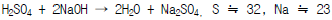
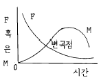
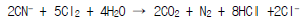
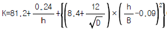

수질환경산업기사 (2002-08-11 기출문제)
1과목: 수질오염개론
1. 적조 발생요인이라 볼 수 없는 것은?
- 갈수기시 수온, 염분이 급격히 높아진 수역
- 질소, 인등의 영양염류가 풍부한 수역
- upwelling 현상이 있는 수역
- 정체 수역
(정답률: 알수없음)

2. 0.02N의 약산이 2% 해리되어 있다면 이 수용액의 pH는?
- 2.8
- 3.4
- 4.6
- 5.2
(정답률: 알수없음)
3. 하천에서의 유기물 분해상태를 조사하기 위해 20℃에서 BOD를 측정했을때 k1 = 0.2/day인 것을 구하였다. 실제 하천의 수온이 18℃ 일 때 k1은? (단, θ 는 1.⑤4 이다.)
- 0.23/day
- 0.18/day
- 0.13/day
- 0.10/day
(정답률: 알수없음)
4. 황산 6.0㎎/L를 중화시키는데 NaOH 필요농도는?

- 4.9 ㎎/L
- 4.2 ㎎/L
- 3.8 ㎎/L
- 3.4 ㎎/L
(정답률: 알수없음)
5. 다음중 박테리아와 원생동물의 경험적 화학 분자식으로 가장 적절한 것은?
- C5H7O2N , C5H8O2N
- C5H8O2N , C7H12O3N
- C5H7O2N , C7H14O3N
- C5H8O2N , C10H17O6N
(정답률: 알수없음)
6. 다음 도면은 미생물의 성장과 유기물과의 관계 곡선이다. (F: 먹이인 유기물량, M: 미생물량) 변곡점까지의 미생물의 성장을 어떤 상태라 하는가?

- 내생성장 상태
- 감소성장 상태
- Floc 형성 상태
- log 성장 상태
(정답률: 알수없음)
7. PbSO4가 25℃ 수용액에서 용해도가 0.035g/L라면 용해도적은? (단, PbSO4 : 303)
- 약 0.9× 10-8
- 약 1.1× 10-8
- 약 1.3× 10-8
- 약 1.5× 10-8
(정답률: 알수없음)
8. 칼슘(Ca)등과 결합하여 영구경도(永久硬度)를 조성하는 것은?
- HCO3-
- CO32-
- SO42-
- OH-
(정답률: 알수없음)
9. 물의 물리 화학적 특성중 틀린 것은?
- 물은 액체상태에서는 수소와 산소의 공유결합 및 수소결합으로 되어 있다.
- 물(액체)분자는 H+와 OH- 평형을 이루어 극성을 형성하지 않으므로 용질에 대하여 유효한 용매이다.
- 물은 광합성의 수소 공여체이며 호흡의 최종산물로서 생체의 중요한 대사물이 된다.
- 물은 비열이 커서 수온의 급격한 변화를 방지해 주므로 생물의 활동이 가능한 기온이 유지된다.
(정답률: 알수없음)
10. 500㎖ 수용액에 125㎎의 염이 녹아 있을때 이 수용액의 농도를 ppm과 %로 나타낸 값은?
- 125 ppm - 2.5 %
- 125 ppm - 25 %
- 250 ppm - 0.25 %
- 250 ppm - 0.025 %
(정답률: 알수없음)
11. 수산화 나트륨 30g을 물에 넣어 250mL로 하면 몰농도는 ? (단, Na=23임)
- 1.7 mol/L
- 2.0 mol/L
- 3.0 mol/L
- 4.2 mol/L
(정답률: 알수없음)
12. 피부염, 피부궤양을 일으키며 흡입으로 코,폐,위장에 점막을 생성하고 폐암을 유발하는 중금속으로 쓰레기연소, 피혁재료등이 발생원인 것은?
- 카드뮴
- 비소
- 크롬
- 석면
(정답률: 알수없음)
13. 분뇨정화조의 희석배율은 다음중 어느 것으로 측정하는 것이 가장 정확하겠는가?
- SS
- BOD
- COD
- Cl-
(정답률: 알수없음)
14. 어느 폐수의 암모니아성 질소농도가 100mg/L일 때, 이를 완전히 산화(질산화)시키는데 필요한 이론적 산소요구량 (mg/L)은?
- 약 417 mg/L
- 약 425 mg/L
- 약 457 mg/L
- 약 486 mg/L
(정답률: 알수없음)
15. 지하수가 오염되었을 때 실시할 수 있는 대책 중 오염물질의 유발요인이 집중적이고 오염된 면적이 비교적 적을 때 적용할 수 있는 가장 적절한 방법은?
- 현장공기추출법
- 유해물질 굴착 제거법
- 오염지하수의 양수 처리법
- 토양내의 미생물을 이용한 처리법
(정답률: 알수없음)
16. 호기성 및 혐기성세균에 의한 산화반응에서 생성되는 최종산물 중 공통적으로 발생하는 물질로 가장 알맞는 것은?
- 메탄
- 유기산
- 황화수소
- 이산화탄소
(정답률: 알수없음)
17. 세균의 세포구조와 기능에 관한 설명으로 틀린 것은?
- 편모-운동력
- 메소좀-세포의 호흡능이 집중된 부위로 추정
- 세포막-세포의 기계적 보호
- 리보솜-단백질 합성
(정답률: 알수없음)
18. 'g당량' 용어 설명이 맞는 것은?
- 분자의 무게를 g으로 나타낸 값이다.
- 분자량을 산화수로 나눈 값이다.
- 용액 1 리터에 1g 분자가 용해된 값이다.
- 용액 1 리터에 1g 용매가 용해된 값이다.
(정답률: 알수없음)
19. 우리나라의 하천 특성에 대한 설명중 틀린 것은?
- 하천의 유출량의 2/3가 하절기인 6∼8월에 집중된다.
- 외국하천에 비해 하상계수(河狀係數)의 차이가 매우 작다.
- 하천의 길이가 짧고 경사가 심하다.
- 하천유량은 강우에 의해 크게 좌우된다.
(정답률: 알수없음)
20. 우리가 수자원으로 이용할 수 있는 지표수는 지구 전체 물량의 약 몇 %인가?
- 0.01%
- 0.⑤%
- 0.5%
- 1%
(정답률: 알수없음)
2과목: 수질오염방지기술
21. 오존살균에 관한 설명으로 틀린 것은?
- 오존은 상수의 최종살균을 위해 주로 사용된다
- 오존은 저장할 수 없어 현장에서 생산해야 한다
- 오존은 산소의 동소체로 HOCl보다 더 강력한 산화제이다
- 수용액에서 오존은 매우 불안정하여 20℃의 증류수에서의 반감기는 20-30분 정도이다
(정답률: 알수없음)
22. 생물학적처리를 위한 포기방법인 다공성산기장치 형식 중 설치비가 비싸고 간헐적인 운전을 할 경우, 막힘현상이 발생하며 유지관리가 어려워 사용이 급격히 감소하는 것은?
- 돔형
- 디스크형
- 관형
- 판형
(정답률: 알수없음)
23. 다음중 보통 음이온교환수지에 대해서 가장 일반적인 음이온의 선택성 순서가 바르게 나열된 것은?
- SO42-＞ I- ＞ NO3- ＞ CrO42- ＞ Br- ＞ Cl- ＞OH-
- Cl- ＞ OH- ＞ SO42- ＞ I- ＞ NO3-＞ CrO42- ＞ Br-
- NO3- ＞ SO42- ＞ I- ＞ CrO42- ＞ Br- ＞ Cl- ＞OH-
- I- ＞ NO3- ＞ CrO42- ＞ SO42- ＞ Br- ＞ Cl- ＞OH-
(정답률: 알수없음)
24. 일차 침전지로 유입되는 생하수는 350 mg/ℓ 의 SS를 함유하고 유출수는 150 mg/ℓ 의 SS를 함유한다. 유량이 500,000 m3/day 라면 일차침전지에서 제거되는 슬러지의 양은? (단, 일차슬러지는 5%의 고형물 함유, 슬러지 비중:1.0 )
- 3000 m3/day
- 2000 m3/day
- 1000 m3/day
- 500 m3/day
(정답률: 알수없음)
25. 하수처리장의 1차 침전지에 관한 설명 중 틀린 것은?
- 표면부하율은 계획1일 최대오수량에 대하여 25-40m3/m2-일로 한다.
- 슬러지제거기를 설치하는 경우 침전지 바닥기울기는 1/100-1/200으로 원만하게 설치한다.
- 슬러지제거를 위해 슬러지 바닥에 호퍼를 설치하며 그 측벽의 기울기는 60도 이상으로 한다.
- 유효수심은 2.5-4m를 표준으로 한다.
(정답률: 알수없음)
26. 토양처리 급속침투 시스템을 설계하여 1차 처리 유출수 50ℓ /sec를 80m3/m2· 년의 속도로 처리하고자 한다. 필요한 부지면적은? (단, 1일 24시간, 1년 365일로 환산한다.)
- 197.1 ha
- 1.971 ha
- 297.1 ha
- 2.971 ha
(정답률: 알수없음)
27. 폐수처리시 흔히 일어나는 미생물 반응에서 메탄 형성 반응(methanogenesis)의 전자 수용체는?
- 유기탄소
- CH4
- CO2
- O2
(정답률: 알수없음)
28. 다음 중 주류(main stream)공정에서는 유기물을 제거하고 측류(side stream)공정에서 인을 처리하는 공정은?
- A/O 공정
- Phostrip 공정
- Bardenpho 공정
- SBR 공정
(정답률: 34%)
29. 회전원판법의 일반적인 특징으로 틀린 것은?
- 폐수량의 변화에 잘 적응한다
- 운전 및 유지관리가 쉬우며 소규모 시설에서는 표준 활성슬러지법에 비하여 전력소비량이 적다
- 활성슬러지법에 비해 최종침전지에서 미세한 부유물질이 유출되기 쉽고 처리수의 투명도가 나쁘다
- 단회로 현상의 제어가 어렵다
(정답률: 알수없음)
30. 5000m3/d의 유량인 하수에 인이 10mg/L 들어있다. 인 1kg 침전시키는데 액체명반 0.87kg이 필요하다면 하수에서 인을 완전히 제거 침전시키는데 필요한 액체명반의 양은? (단, 액체명반: Al2(SO4)318H2O, MW : 667, 단위중량: 1300kg/m3)
- 30.20ℓ /day
- 33.46ℓ /day
- 45.12ℓ /day
- 51.92ℓ /day
(정답률: 알수없음)
31. 폐수속에 염산 3.65g 을 중화시키려면 수산화칼슘 몇 g이 필요한가? (단, Cl의 원자량 35.5, Ca의 원자량 40 이다)
- 1.8 g
- 3.7 g
- 7.2 g
- 14.4 g
(정답률: 알수없음)
32. 유기인 함유 폐수에 관한 설명으로 틀린 것은?
- 폐수에 함유된 유기인 화합물은 파라치온,말라치온 등의 농약이다
- 유기인 화합물은 산성이나 중성에서 안정하다
- 물에 쉽게 용해되어 독성을 나타내기 때문에 전처리 과정을 거친후 생물학적 처리법을 적용할 수 있다
- 가장 일반적이고 효과적인 방법으로는 생석회 등의 알칼리로 가수분해 시키고 응집침전 또는 부상으로 전처리한 다음 활성탄 흡착으로 미량의 잔유물질을 제거시키는 것이다
(정답률: 알수없음)
33. 폐수가 특이한 색깔을 내지 않는 상태에서 보이는 활성슬러지의 일반적인 색상과 가장 가까운 것은?
- 흑색
- 적갈색
- 흑회색
- 청회색
(정답률: 알수없음)
34. 200mg/ℓ 의 CN(시안)을 함유한 폐수 50m3을 알칼리 염소법으로 처리하는데 필요한 이론적인 염소량(kg)은? (단, 원자량은 Cl : 35.5)

- 46.3 kg
- 52.7 kg
- 68.3 kg
- 73.8 kg
(정답률: 알수없음)
35. 활성슬러지법으로 폐수를 처리할 경우 포기조 혼합액의 MLSS농도가 2000mg/ℓ 이고 이 혼합액 1ℓ 를 Imhoff Cone에 30분간 정치했을 때 SV가 250mℓ 이었다. 이 때 SVI값은?
- 75
- 100
- 125
- 150
(정답률: 알수없음)
36. 염소 소독시 살균력의 증가 방법이 아닌 것은?
- 온도의 증가
- 반응시간의 증가
- pH의 증가
- 염소농도의 증가
(정답률: 알수없음)
37. 지구상의 물은 물속에 염이 포함되어 있다 다음중 가장 많은 염을 포함하는 물은?
- 브라인(brine)
- 염수(saline water)
- 반염수(brackish)
- 해수(sea water)
(정답률: 알수없음)
38. BOD가 450 mg/L이고 유량이 650 m3/day인 폐수를 BOD 용적부하 0.5 kg/m3-day의 활성슬러지 공법으로 처리하고자 할 때 폭기조의 평균 체류시간은?
- 12 hr
- 15 hr
- 22 hr
- 27 hr
(정답률: 알수없음)
39. 혐기성공법 중 혐기성유동상의 장점으로 틀린 것은?
- 짧은 수리학적 체류시간과 높은 부하율로 운전이 가능하다
- 정상상태에 도달하기 위한 초기 운전기간이 짧다
- 고농도 폐수의 희석이나 독성 물질에 대한 완충능력이 좋다
- 매질의 첨가나 제거가 용이하다
(정답률: 알수없음)
40. 유적(油適) A와 B의 지름은 동일하나 A의 비중은 0.88이고, B의 비중은 0.91이다. 이때의 A/B의 부상속도비(浮上速度比)는? (단, 기타 조건은 같다)
- 1.03
- 1.33
- 1.52
- 1.61
(정답률: 알수없음)
3과목: 수질오염공정시험방법
41. BOD 실험에서 배양기간 중에 4.5mg/L의 용존산소소모를 바란다면 BOD 300mg/L로 추정되는 폐수라 할 때 300mL 부란병에 취하는 시료는 몇 mL가 적당하겠는가?
- 4.5mL
- 7.4mL
- 8.2mL
- 10.2mL
(정답률: 알수없음)
42. 수질오염공정시험방법에서 '항량으로 될 때까지 강열한다'는 말은 어떤 의미를 가지고 있는가?
- 같은 조건에서 한시간 더 건조했을 때 전후 무게차가 1g당 0.1mg 이하일 때
- 같은 조건에서 한시간 더 건조했을 때 전후 무게차가 1g당 0.3mg 이하일 때
- 같은 조건에서 한시간 더 건조했을 때 전후 무게차가 1g당 0.5mg 이하일 때
- 같은 조건에서 한시간 더 건조했을 때 전후 무게차가 1g당 1.0mg 이하일 때
(정답률: 알수없음)
43. SS의 측정 방법은 다음 중 어느 방법에 속하는가?
- 중화적정법
- 침전적정법
- 산화환원적정법
- 중량분석법
(정답률: 알수없음)
44. 다음 시약 중 그 특성이 나머지 시약과 다른 것은?
- K2Cr2O7
- Na2S2O3
- KMnO4
- H2O2
(정답률: 알수없음)
45. 시료의 채취 방법을 잘못 설명하고 있는 것은?
- 채취용기는 시료를 채우기전에 시료로 3회이상 세척 후 사용한다.
- 수소이온농도를 측정하기 위한 시료는 운반중 공기와 접촉이 없도록 가득 채운다.
- 시료채취량은 시험항목 및 시험회수에 따라 차이가 있으나 보통 3-5ℓ 정도이다.
- 부유물질 등이 함유된 하천시료는 시료의 균질성이 유지되도록 침전물을 완전혼합 후 채수한다.
(정답률: 알수없음)
46. 채취된 시료수에 다량의 점토질 또는 규산염을 함유한 시료의 적용되는 전처리 방법은?
- 질산 - 황산에 의한 분해
- 질산 - 과염소산 - 불화수소에 의한 분해
- 질산 - 황산 - 과염소산에 의한 분해
- 회화에 의한 분해
(정답률: 알수없음)
47. 알칼리성 100℃에서 KMnO4에 의한 COD 측정법에서 0.025N 티오황산 나트륨액으로 적정할 때 무슨 색으로 될 때까지 적정하는가?
- 무색
- 홍색
- 적색
- 청색
(정답률: 알수없음)
48. 유도결합 플라스마 발광광도계 장치의 조작법중 설정조건에 대한 설명이다. 잘못된 것은?
- 고주파출력은 수용액시료의 경우 0.8-1.4kw, 유기용매시료의 경우 1.5-2.5kw로 설정한다.
- 가스유량은 일반적으로 냉각가스 10-18L/min, 보조가스 5-10L/min 범위이다.
- 분석선(파장)의 설정은 일반적으로 가장 감도가 높은 파장을 설정한다.
- 플라스마 발광부 관측 높이는 유도코일 상단으로부터 15-18mm범위에 측정하는 것이 보통이다.
(정답률: 알수없음)
49. 용존산소량(DO) 측정시 시료에 활성슬러지 미생물 플록(floc)이 형성된 경우의 시료 전처리로 가장 옳은 것은?
- 칼륨명반-암모니아 용액 주입
- 황산구리-슬퍼민산 용액 주입
- 알카리성 요오드화칼륨-아지드화나트륨 용액 주입
- 불화칼륨-황산 용액 주입
(정답률: 알수없음)
50. 다음 기기 중 이온크로마토그래피의 기본구성장치를 나타낸 것은?
- 시료도입부-광원부-파장선택부-시료부-측광부
- 시료주입부-광원부-시료원자화부-단색화부-측광부
- 시료도입부-용리액조-고주파전원부-광원부-분광부-기록부
- 용리액조-시료주입부-액송펌프-분리컬럼-검출기-기록계
(정답률: 알수없음)
51. 진한 HCl(38% 비중 1.194)로 1 N HCl 1ℓ 를 만들려면 진한 HCl를 몇 mL 채취하여야 되겠는가?
- 약 80.4
- 약 85.4
- 약 90.4
- 약 95.4
(정답률: 알수없음)
52. 수로 및 직각 3각 위어판을 만들어 유량산출할 때 위어의 수두 0.2㎝, 수로의 밑면에서 절단 하부점까지의 높이 0.75m, 수로의 폭 0.5㎝, 월류수심 0.1㎝이다. 이 때의 유량은 ? (단,

이다.)- 0.27m3/min
- 1.5m3/min
- 2.1m3/min
- 2.69m3/min
(정답률: 30%)
53. 비교전극과 이온전극간의 전위차를 이용한 정량방법으로 이온 전극법이 이용된다. 이온 농도의 일반적 측정범위는 얼마인가?
- 10-1 mol/ℓ - 10-7 mol/ℓ
- 10-1 mol/ℓ - 10-10 mol/ℓ
- 10-1 mol/ℓ - 10-14 mol/ℓ
- 10-1 mol/ℓ - 10-17 mol/ℓ
(정답률: 알수없음)
54. 이온크로마토그래피법에 사용하는 검출기와 가장 거리가 먼 것은?
- 수소염이온화검출기
- 전기전도도검출기
- 전기화학적검출기
- 광학적검출기
(정답률: 알수없음)
55. 대장균군 실험방법(최적확수시험법)에 관한 설명중 알맞지 않은 것은?
- 실험상의 오염을 방지하기 위하여 모든 조작은 무균 조작을 하여야 한다.
- 측정원리는 시료를 유당이 포함 배지에 배양할 때 대장균군 증식하면서 가스를 생성하는데 이때 음성 시험관수를 확률적 수치인 최적 확수로 표시한다.
- 대장균군의 정성시험은 추정시험, 확정시험, 완전시험 3단계로 나눈다.
- 대장균군이라 함은 그람음성, 무아포성 간균으로 유당을 분해하여 가스 또는 산을 발생하는 모든 호기성 또는 통성 혐기성균을 말한다.
(정답률: 알수없음)
56. 시료 용기로 유리병을 사용해서는 안되는 항목은?
- 노말핵산 추출물질
- 페놀류
- 색도
- 플루오르
(정답률: 알수없음)
57. 수은 측정에 관한 설명으로 알맞지 않은 것은?
- 원자흡광광도법(환원기화법)은 시료에 염화제일주석을 넣어 금속수은으로 환원시켜 실험한다.
- 원자흡광 분석장치는 석영제 흡수셀이 부착된것을 사용한다.
- 흡광광도법(디티죤법)은 디티죤 사염화탄소로 수은 을 추출하여 흡광도를 측정하는 방법이다.
- 흡광광도법에서 추출작업전 불순물을 제거하기 위하여 황산, 질산, 과망간산칼륨혼합용액으로 산화 과정을 거친후 역추출하여야 한다.
(정답률: 알수없음)
58. n-헥산 추출물질시험법에서 염산(1+1)으로 산성화 할 때 넣어주는 지시약과 이때의 pH의 연결이 맞는 것은?
- 메틸레드지시액 - pH 4.0 이하
- 메틸오렌지지시액 - pH 4.0 이하
- 메틸레드지시액 - pH 4.5 이하
- 메틸렌블루지시액 - pH 4.5 이하
(정답률: 알수없음)
59. 시료채취 직후 바로 시험을 할 수 없을 경우에는 측정항목에 따라 적당한 전처리를 하여 보존하여야 한다. 다음 각 항목별 측정을 위한 보존처리 방법으로서 적절치 않는 것은?
- 불소이온 검정용시료는 질산 2㎖/ℓ 를 가한다.
- 시안이온 검정용 시료는 수산화나트륨 용액을 가해 pH 12 이상으로 조절하여 4℃에 보관한다.
- 질산성 질소의 검정용 시료는 4℃에 보관한다.
- 페놀류 검정시료는 인산(H3PO4)을 가해서 pH 4 이하로 조절한 후, CuSO4 1g/L를 첨가하여 4℃에 보관한다.
(정답률: 알수없음)
60. 카드뮴에 대해 원자흡광광도법으로 분석할 경우 분자흡광이나 산란등의 오차를 일으킬 수 있는 가능성이 가장 높은 물질은?
- 염화나트륨
- 구리이온
- 염산
- 당류
(정답률: 알수없음)
4과목: 수질환경관계법규
61. 환경관리청장 또는 지방환경관리청장이 교육대상자를 선발하여야 할 교육과정으로 적절한 것은?
- 배출시설 및 방지시설 관리자과정
- 폐수분석기술요원과정
- 폐수처리장 관리자과정
- 폐수처리기술요원과정
(정답률: 알수없음)
62. 다음 중 수질환경보전법에서 정의하는 공공수역이 아닌 곳은?
- 하천
- 지하수로
- 항만
- 상수관거
(정답률: 20%)
63. 다음중 초과부과금 부과대상 오염물질이 아닌 것은?
- 부유물질
- 황 및 그 화합물
- 망간 및 그 화합물
- 유기인화합물
(정답률: 알수없음)
64. 폐수의 재이용율이 35%인 사업자에게 배출부과금 100만원이 부과된 경우 감경받는 금액은?
- 20만원
- 30만원
- 35만원
- 40만원
(정답률: 알수없음)
65. 폐수종말처리시설의 관리,운영자가 처리시설의 적정운영 여부를 확인하기 위하여 실시하여야 하는 방류수수질의 검사 주기로 적절한 것은?(단, 처리시설은 2000m3/일 미만 )
- 매분기 1회이상
- 매분기 2회이상
- 월 2회이상
- 월 1회이상
(정답률: 알수없음)
66. 특례지역에서의 오염물질별 배출허용기준을 바르게 짝지은 것은?
- 온도 - 40℃ 이하
- 색도 - 300도 이하
- 페놀류함유량 - 3mg/L 이하
- 총인 - 4mg/L 이하
(정답률: 알수없음)
67. 배출부과금을 부과할 때 고려사항과 가장 거리가 먼것은?
- 배출허용기준 초과여부
- 오염물질의 배출농도
- 배출되는 오염물질의 종류
- 자가측정 여부
(정답률: 알수없음)
68. 1종사업장이 자연공원법에 의한 공원구역에 위치한 경우 화학적 산소요구량(㎎/ℓ )의 배출허용기준은?
- 30이하
- 40이하
- 50이하
- 60이하
(정답률: 알수없음)
69. 방류수수질기준 초과율이 50%이상 60%미만인 경우에 부과되는 계수로 적절한 것은?
- 1.2
- 1.5
- 2.0
- 2.4
(정답률: 알수없음)
70. 낚시제한구역에서 과태료 대상이 되는 행위라 볼 수 없는 것은?
- 낚시 바늘에 떡밥 또는 어분을 끼워 사용하여 오염 시키는 행위
- 1인당 4대이상의 낚시대를 사용하는 행위
- 화장실이 아닌 곳에서 똥,오줌을 누는 행위
- 어선을 이용한 낚시행위등 낚시어선업법의 규정에 의한 낚시어선업을 영위하는 행위
(정답률: 알수없음)
71. 다음은 상시측정에 따른 측정망계획에 관련된 설명이다. 옳은 것은?
- 환경부장관은 전국적인 수질오염의 실태를 파악하기 위하여 환경정책기본법이 정하는 바에 따라 측정망을 설치하여 수질오염도를 상시 측정하여야 한다.
- 환경부장관 또는 시도지사가 도로나 공유수면에 측정망을 설치하고자 할 때에도 사전에 중앙관계장관과 협의하여 허가를 받아야 한다.
- 측정망 설치계획에는 측정망 설치위치, 측정망 배치시기, 측정항목, 예산등이 포함되어야 한다.
- 측정망 설치계획의 고시는 최초로 측정소를 설치하게 되는 날의 3월 이전에 하여야 한다.
(정답률: 알수없음)
72. 1종사업장 1개와 3종 사업장 1개를 운영하는 사업자가 각각 조업정지 5일에 갈음하여 납부하여야 하는 과징금의 총액은?
- 4천5백만원
- 3천5백만원
- 2천5백만원
- 1천5백만원
(정답률: 알수없음)
73. 폐수처리업의 등록기준 중 기술능력의 기준으로 적절한 것은?(단, 폐수재이용업)
- 수질환경기술사 1명이상
- 수질환경기사 1인이상
- 수질환경산업기사 1인이상
- 수질환경기능사 1인이상
(정답률: 알수없음)
74. 수질환경보전법상 '특정수질유해물질'이 아닌 것은?
- 사염화탄소
- 디클로로에탄
- 구리 및 화합물
- 셀레늄 및 그 화합물
(정답률: 알수없음)
75. 수질오염방지시설중 물리적 처리시설이 아닌 것은?
- 혼합시설
- 농축시설
- 응집시설
- 흡착시설
(정답률: 알수없음)
76. 지정호소수질보전계획에 포함될 사항과 가장 거리가 먼것은?
- 지정호소의 수질보전을 위한 수질관리기본대책
- 하수도등의 정비 기타 지정호소수질보전사업에 관한사항
- 지정호소지역설정기준 및 범위에 관한 사항
- 지정호소의 준설, 조류제거 및 수면청소등에 관한사항
(정답률: 알수없음)
77. 낚시금지구역안에서 낚시행위를 한 자에 대한 벌칙으로 적절한 것은?
- 100만원이하의 과태료에 처한다
- 50만원이하의 과태료에 처한다
- 100만원이하의 벌금에 처한다
- 1년이하의 징역 또는 500만원이하의 벌금에 처한다
(정답률: 알수없음)
78. 위임업무보고사항 중 배출업소의 지도,점검 및 행정처분 실적의 보고기일로 적절한 것은?
- 매반기 종료후 15일이내
- 매분기 종료후 10일이내
- 매분기 종료후 15일이내
- 다음달 10일까지
(정답률: 알수없음)
79. 배출시설 또는 방지시설의 적정운영에 필요한 기간으로 알맞은 것은 ? (단, 생물화학적 폐수처리방법인 경우이며, 가동개시일은 7월 10일이다)
- 가동개시일로 부터 120일
- 가동개시일로 부터 70일
- 가동개시일로 부터 50일
- 가동개시일로 부터 30일
(정답률: 알수없음)
80. [ 정상가동중인 하수종말처리시설에 배수설비를 연결하여 처리하고 있는 배출시설에 대한 오염물질 배출허용기준은 ( )의 기준을 적용한다 ] ( )안에 알맞는 내용은?
- 청정지역
- 특례지역
- '가'지역
- '나'지역
(정답률: 알수없음)